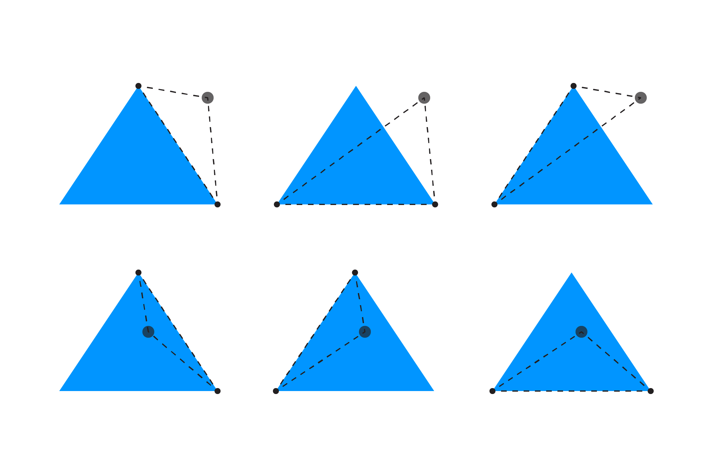

Щоб перевірити, чи знаходиться точка всередині трикутника, ми порівнюємо площу цільового трикутника із сумою площ трьох трикутників, утворених між цільовою точкою та кутами цільового трикутника.
Ось діаграма, яка демонструє трикутники, утворені для цільової точки для двох варіантів, коли точка знаходиться зовні та всередині цільового трикутника:

Щоб отримати площу трикутника, ми використовуємо формулу Герона:
const areaOrig = abs((x2-x1) * (y3-y1) - (x3-x1) * (y2-y1));
Для зручності обчислення площі трикутника можна винести в окрему функцію, оскільки вона нам ще знадобиться:
function getTriangleArea(x1, y1, x2, y2, x3, y3) {
return abs((x2 - x1) * (y3 - y1) - (x3 - x1) * (y2 - y1));
}
Нам також потрібно обчислити площу трьох трикутників, які можна сформувати від ребер трикутника до точки:
const area1 = getTriangleArea(px, py, x1, y1, x2, y2);
const area2 = getTriangleArea(px, py, x2, y2, x3, y3);
const area3 = getTriangleArea(px, py, x3, y3, x1, y1);
Якщо ми візьмемо суму трьох площ і вона буде дорівнювати прощі оригінального трикутника, тоді точка знаходиться всередині трикутника! Використовуючи ці дані, ми можемо перевірити наявність колізії:
if (area1 + area2 + area3 == areaOrig) {
return true;
}
return false;
Повний приклад коду:
// змінні для рухомої точки
let px = 0;
let py = 0;
// три пари змінних для трьох точок трикутника
let x1, y1;
let x2, y2;
let x3, y3;
function setup() {
createCanvas(window.innerWidth, window.innerHeight);
noCursor();
strokeWeight(15); // збільшена жирність, щоб краще бачити точку
x1 = width / 2;
y1 = 100;
x2 = width / 2 + 150;
y2 = height - 100;
x3 = width / 2 - 150;
y3 = height - 100;
}
function draw() {
background(255);
// оновлення координат точки координатами курсора
px = mouseX;
py = mouseY;
// результат перевірки на зіткнення
const isHit = isTriWithPointCollides(x1, y1, x2, y2, x3, y3, px, py);
// при зіткненні змінюємо колір
if (isHit) {
fill(255, 150, 0);
} else {
fill(0, 150, 255);
}
// малювання трикутника
noStroke();
triangle(x1, y1, x2, y2, x3, y3);
// малювання точки
stroke(0, 150);
point(px, py);
}
// перевірка на перетин між точкою та трикутником
function isTriWithPointCollides(x1, y1, x2, y2, x3, y3, px, py) {
// обчислення площі трикутника
const areaOrig = abs((x2 - x1) * (y3 - y1) - (x3 - x1) * (y2 - y1));
// обчислення площі 3-х трикутників між точкою та кутами трикутника
const area1 = getTriangleArea(px, py, x1, y1, x2, y2);
const area2 = getTriangleArea(px, py, x2, y2, x3, y3);
const area3 = getTriangleArea(px, py, x3, y3, x1, y1);
// якщо сума трьох площ дорівнює площі оригінального трикутника, значить точка всередині!
if (area1 + area2 + area3 === areaOrig) {
return true;
}
return false;
}
// обчислення площі трикутника
function getTriangleArea(x1, y1, x2, y2, x3, y3) {
return abs((x2 - x1) * (y3 - y1) - (x3 - x1) * (y2 - y1));
}
Цей приклад створено на основі модифікованої версії публікації на YoYo Games. Якщо ви бажаєте прочитати чимале обговорення переваг і проблем цього способу, а також багато інших пропозицій, перегляньте цю тему на GameDev.net.
Далі: Де інші приклади з трикутниками?